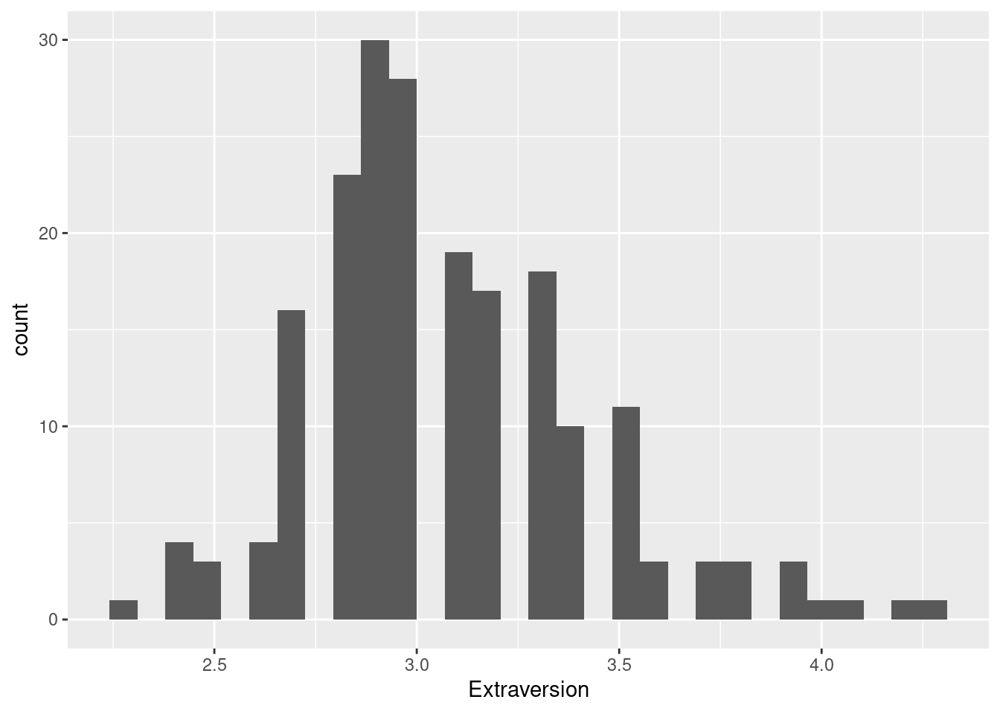
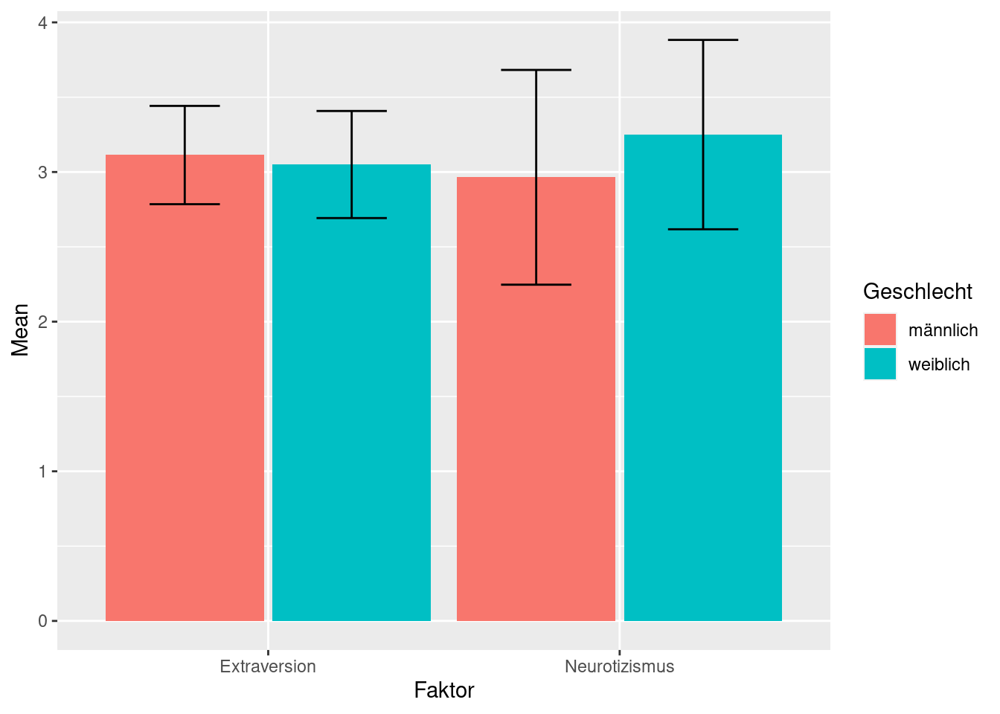
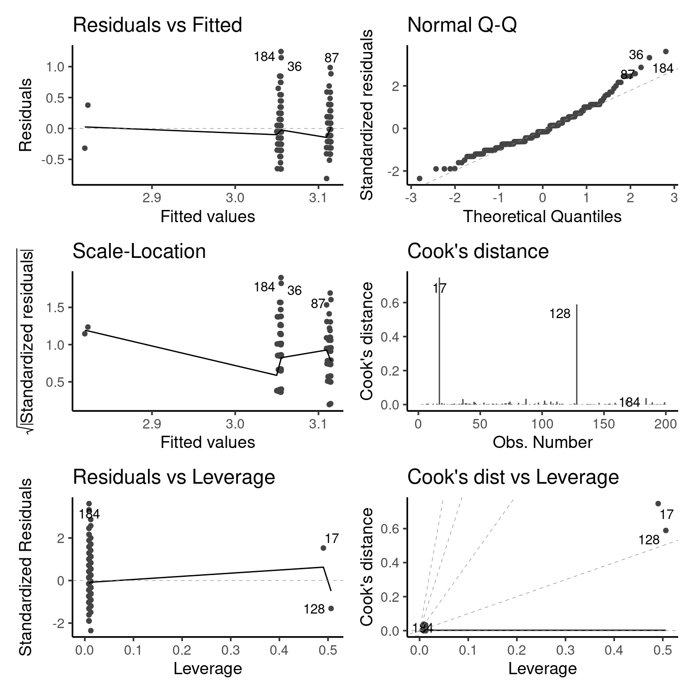

Kapitel 8 Visualisierungen
8.1 Einführung
Für sämtliche Visualisierungen werden wir das ggplot Package aus dem tidyverse verwenden. ggplot steht dabei für grammar of graphics (engl. für Grammatik der Abbildungen).
library(tidyverse)Wir werden wie bei der deskriptiven Statistik auch hier mit der leicht modifizierten Variante des Big Five Datensatzes arbeiten.
big5_mod# A tibble: 200 × 6
Alter Geschlecht Extraversion Neurotizismus Gruppe ID
<dbl> <chr> <dbl> <dbl> <fct> <int>
1 36 m 3 1.9 Mittel 1
2 30 f 3.1 3.4 Jung 2
3 23 m 3.4 2.4 Jung 3
4 54 m 3.3 4.2 Weise 4
# … with 196 more rowsIn Abbildung 8.1 sind die grundsätzlichen Komponenten einer ggplot Abbildung links und je ein entsprechendes Beispiel rechts abgebildet. Jeder ggplot besteht aus verschiedenen Layern, die untereinander gelegt werden. Um eine Abbildung zu erstellen, muss auf jeden Fall Data, Aestetics und Geometries vorhanden sein. Die Layer namens Scales und Theme sind hingegen optional und passen lediglich das Erscheinungsbild an. Wir werden uns in Kapitel 8.2 bis 8.8) die jeweiligen Data, Aestetics und Geometries anschauen. Erst in Kapitel 8.10 werden die Anpassungsmöglichkeiten mithilfe der Scales und Theme Layer umfangreich erklärt.
Abbildung 8.1: Vereinfachte Anordnung der Layer im Rahmen der Grammar of Graphics mit Beispielen.
Es ist wichtig zu verstehen, dass die Layer untereinander gelegt werden und man am Ende von unten auf die kreierte Abbildung schaut. Wenn man bspw. mehrere Geometries hintereinander in einen Plot einbaut, kann der zuletzt hinzugefügte den zuvor hinzugefügten ganz oder teilweise überdecken. Bleiben wir bei dem Beispiel der Erstellung eines Histogramms aus Abbildung 8.1.
ggplot(data = big5_mod, mapping = aes(x = Extraversion)) +
geom_histogram() Innerhalb der Funktion ggplot() wird dem data Argument der Datensatz big5_mod übergeben. Aus diesem Datensatz möchten wir die Spalte Extraversion auf der x-Achse abbilden. Die ersten beiden Layer sind somit bereits vorhanden. Der Aestetics Layer wird durch das mapping Argument hinzugefügt. Allerdings können wir die Spalte nicht einfach mit x = Extraversion hinzufügen, sondern benötigen die Helferfunktion aes(), der wir unsere Spalte übergeben. Dabei steht aes() für aesthetics (engl. für Ästhetik).
Neben der Spalte, die auf der x-Achse abgebildet werden soll, kann auf dieselbe Art und Weise die y-Achse definiert werden. Auch Argumente zur Veränderung des Aussehens wie color (Außenfarbe) oder fill (Füllfarbe) können hier innerhalb von aes() der Funktion ggplot übergeben werden. Der eigentliche Graph wird erst mit den geom_*() Funktionen hinzugefügt (z.B. geom_histogram()). Das Präfix geom ist dabei für jeden Geometry Layer derselbe.
Wichtig ist an dieser Stelle noch das Pluszeichen (+), welches sämtliche Layer zusammenbindet und untereinander aneinander bindet. Dies unterscheidet sich grundlegend von den restlichen Funktion innerhalb des tidyverse, die mithilfe der Pipe (|>) kombiniert werden können (siehe Kapitel 6).
Anders als sonst können Funktionen aus ggplot2 nicht mit einer Pipe aneinander gebunden werden. Das hat ausschließlich historische Gründe, da zu der Zeit der Erstellung von ggplot2 die Pipe noch nicht existiert hat. Dies wird sich in Zukunft voraussichtlich auch nicht mehr ändern.
Schauen wir uns die einzelnen Befehle einmal genauer an. Die erste Zeile kreiert nur den Plot an sich und kein Histogramm. Die beiden Argumente data und mapping schreiben wir von nun an nicht mehr explizit aus, da die Reihenfolge dieser Argumente im Verlaufe des Buches dieselbe ist.
ggplot(big5_mod, aes(x = Extraversion)) 
Wie zuvor kurz erwähnt, beginnt die Funktion zur eigentlichen Visualisierung der Daten mit geom_ und endet mit dem Namen der Abbildungsart (hier ein Histogramm).
ggplot(big5_mod, aes(x = Extraversion)) +
geom_histogram() 
Das standardmäßige Aussehen mit dem grauen Hintergrund ist in dieser Form nicht publikationsreif. Anpassungsmöglichkeiten werden in Kapitel 8.10 eingeführt.
8.2 Histogramm und Dichte
Das Histogramm wurde exemplarisch bereits zur Erklärung des Aufbau eines ggplots in der Einführung beschrieben. Im Falle eines Histogramms bedarf es nur der Zuweisung der Variable für die x-Achse, da auf der y-Achse die Häufigkeitsverteilung dargestellt wird.
ggplot(big5_mod, aes(x = Extraversion)) +
geom_histogram() Für ein schlichteres Aussehen fügen wir in Abbildung 8.2 (b) noch eine schwarze Rahmenfarbe mit dem color Argument und eine weiße Füllungsfarbe mit fill hinzu.
Histogramme sind maßgeblich von der gewählten Breite der Balken abhängig. Bei zu wenigen Balken können Informationen der Verteilung verloren gehen, bei zu vielen hingegen irrelevante Trends erscheinen. Dieses kann entweder direkt mit der Anzahl der Balken (bins Argument) oder mit der Breite (binwidth Argument) verändert werden. Wir werden hier das Argument binwidth verwenden, da diesem auch eine Funktion übergeben werden kann.
ggplot(big5_mod, aes(x = Extraversion)) +
geom_histogram(
color = "black",
fill = "white",
binwidth = 0.2
)Abbildung 8.2: Histogramme im Vergleich.
Es gibt verschiedene Arten, eine möglichst optimale binwidth herauszufinden. Exemplarisch sei hier die Freedman-Diaconis Regel angewandt. Diese neue Funktion kann ohne weiteres dem binwidth Argument übergeben werden. Das Ergebnis ist in Abbildung 8.3 (a) gezeigt.
ggplot(big5_mod, aes(x = Extraversion)) +
geom_histogram(
color = "black",
fill = "white",
binwidth = function(x) (max(x) - min(x)) / nclass.FD(x)
)Eine weitere Möglichkeit, die Verteilung der Extraversion unserer Population darzustellen, ist die Wahrscheinlichkeitsdichte. Dazu müssen wir lediglich das Suffix des Geometry Layers zu density (engl. für Dichte) verändern (siehe Abbildung 8.3 (b)).
ggplot(big5_mod, aes(x = Extraversion)) +
geom_density()Um das Histogramm gemeinsam mit der Wahrscheinlichkeitsdichte abzubilden, müssen sich beide auf derselben Skala befinden. Zum Beispiel könnte man die Häufigkeiten des Histogramms ebenfalls als Dichte ausdrücken. Dafür muss dem height und y Argument jeweils die berechnete Dichte (density) übergeben werden. Diese wird mithilfe der Helferfunktion stat() berechnet.
Anschließend muss lediglich mit einem weiteren Pluszeichen die Dichtefunktion hinzugefügt werden. Für eine ansprechendere optische Darstellung sei eine graue Füllfarbe ergänzt, welche mithilfe des alpha Argument etwas durchsichtig wird. Das Ergebnis kann in Abbildung 8.3 (c) betrachtet werden.
ggplot(big5_mod, aes(x = Extraversion, height = stat(density))) +
geom_histogram(
mapping = aes(y = stat(density)),
binwidth = 0.2,
color = "black",
fill = "white"
) +
geom_density(
fill = "grey",
alpha = 0.7
)Abbildung 8.3: Histogramm und Wahrscheinlichkeitsdichte separat und kombiniert.
Das ist ein Platzhalter für eine Übung. Starte die Übung mit hands_on("test").
8.3 Streudiagramm
Das Erstellen eines Streudiagramms benötigt das Festlegen der x-Achse und y-Achse. Im Vergleich zum bereits kennengelernten Histogram ändert sich sonst nur der Geometry Layer zu geom_point(). Exemplarisch sei hier die mittlere Extraversion gegen das Alter in Jahren aufgetragen (siehe Abbildung 8.4 (a)). Auf weitere Parameter wie das Ändern der Farbe (color) oder Form (shape) verzichten wir an dieser Stelle.
ggplot(big5_mod, aes(x = Extraversion, y = Alter)) +
geom_point()Bei größeren Datensätzen kann es passieren, dass die Punkte sich überlappen. Um das zu verhindern, kann die Position zu jitter verändert werden. Dies bewirkt eine leichte zufällige Variation jedes Datenpunktes (siehe Abbildung 8.4 (b)).
ggplot(big5_mod, aes(x = Extraversion, y = Alter)) +
geom_point(position = "jitter")Mit geom_smooth() wird eine am besten passende Linie durch die Punkte gezogen. Wir entscheiden uns an dieser Stelle für eine lineare Regressionsgeraden (method = lm). Außerdem färben wir die Gerade schwarz und fügen ein 95%iges Konfidenzintervall mit se = TRUE hinzu.
Damit die Regressionsgerade nicht nur in dem Bereich, in dem Daten beobachtet wurden, abgebildet wird, kann zusätzlich das fullrange Argument auf TRUE gesetzt werden. Um den Effekt dieser Funktion zu illustrieren, greifen wir etwas voraus und definieren mit xlim(c(2, 5)) die untere Grenze der x-Achse mit 2 und die obere mit 5 (siehe Abbildung 8.4 (c)).
ggplot(big5_mod, aes(x = Extraversion, y = Alter)) +
geom_point(position = "jitter") +
geom_smooth(
color = "black",
method = lm,
se = TRUE,
fullrange = TRUE
) +
xlim(c(2, 5)) Abbildung 8.4: Streudiagramm mit und ohne Regressionsgerade.
Das ist ein Platzhalter für eine Übung. Starte die Übung mit hands_on("test").
8.4 Boxplot
Würde man nur einen Boxplot für die mittlere Ausprägung von Extraversion erstellen wollen, könnte man dies genau wie in den beiden zuvor besprochenen Kapiteln durch das Auswechseln des Geometry Layers mit geom_boxplot() erreichen (siehe Abbildung 8.5 (a)).
ggplot(big5_mod, aes(y = Extraversion)) +
geom_boxplot()Dies stellt allerdings eine seltene Situation dar. Meistens ist man am Vergleich mehrerer Variablen interessiert, die auf der x-Achse aufgetragen werden.
An dieser Stelle sollen die Verteilungen von Extraversion und Neurotizismus miteinander verglichen werden. Um dies zu erreichen, müssen wir den Datensatz vom breiten ins lange Datenformat transformieren (siehe Kapitel 6.6). Dafür wird die Funktion pivot_longer() verwendet.
big5_long <- big5_mod |>
pivot_longer(
cols = Extraversion:Neurotizismus,
names_to = "Faktor",
values_to = "Auspraegung"
)
big5_long# A tibble: 400 × 6
Alter Geschlecht Gruppe ID Faktor Auspraegung
<dbl> <chr> <fct> <int> <chr> <dbl>
1 36 m Mittel 1 Extraversion 3
2 36 m Mittel 1 Neurotizismus 1.9
3 30 f Jung 2 Extraversion 3.1
4 30 f Jung 2 Neurotizismus 3.4
# … with 396 more rowsNach der Umwandlung sind in big5_long die Persönlichkeitsfaktoren in der Spalte Faktor und die Extraversions- und Neurotizismusausprägung in der Spalte Auspraegung.
Einen Boxplot erstellt man mit geom_boxplot(). Auf der x-Achse möchten wir die Persönlichkeitsfaktoren und auf der y-Achse die mittleren Ausprägungen darstellen (siehe Abbildung 8.5 (b)).
ggplot(big5_long, aes(x = Faktor, y = Auspraegung)) +
geom_boxplot()Um zusätzlich Fehlerbalken zu erhalten, müssen diese mit stat_boxplot() berechnet werden. Das Argument geom muss auf "errorbar" (engl. für Fehlerbalken) gesetzt werden. Die Breite des Fehlerbalkens kann durch das optionale Argument width kontrolliert werden. Zum Ausblenden der Ausreißer setzt man innerhalb von geom_boxplot() die outlier.shape auf NA (Akronym für Not Available, engl. für nicht vorhanden). Das Ergebnis ist in Abbildung 8.5 (c) illustriert.
ggplot(big5_long, aes(x = Faktor, y = Auspraegung)) +
stat_boxplot(geom = "errorbar", width = 0.4) +
geom_boxplot(outlier.shape = NA) Abbildung 8.5: Boxplots im Vergleich.
Beim Hinzufügen von Fehlerbalken ist die Reihenfolge der Funktionsaufrufe entscheidend, da die verschiedenen Layer untereinander gezeichnet werden. Würden wir also zunächst geom_boxplot() und erst anschließend stat_boxplot() zum ggplot hinzufügen, würde die Linie des Fehlerbalkens über dem Boxplot abgebildet werden.
Das ist ein Platzhalter für eine Übung. Starte die Übung mit hands_on("test").
8.5 Violin Plot
Im Vergleich zu Boxplots ändert sich zum Einen der Geometry Layer, welcher nun geom_violin() heißt und zum Anderen muss noch eine willkürliche Koordinate für die x-Achse gewählt werden (hier 0) (siehe Abbildung 8.6 (a)).
ggplot(big5_mod, aes(x = 0, y = Extraversion)) +
geom_violin()Für mehrere Violin Plots nutzen wir genau wie zuvor bei den Boxplots den Datensatz im langen Datenformat namens big5_long (siehe Kapitel 8.4 und 6.6). Auch hier werden auf der x-Achse die Persönlichkeitsfaktoren und auf der y-Achse die jeweilige Ausprägung ausgegeben (siehe Abbildung 8.6 (b)).
ggplot(big5_long, aes(x = Faktor, y = Auspraegung)) +
geom_violin()Optional kann zusätzlich das Argument trim auf FALSE gesetzt werden, um das Abschneiden der Enden des Violin Plots zu verhindern. Mithilfe des Arguments draw_quantiles können wir explizit beliebige Quantile (hier Quartile) einzeichnen lassen. Das Ergebnis ist in Abbildung 8.6 (c) zu sehen.
ggplot(big5_long, aes(x = Faktor, y = Auspraegung)) +
geom_violin(
trim = FALSE,
draw_quantiles = c(0.25, 0.5, 0.75)
)Abbildung 8.6: Violin Plots im Vergleich.
Das ist ein Platzhalter für eine Übung. Starte die Übung mit hands_on("test").
8.6 Balkendiagramm
Bei Balkendiagrammen möchte man in der Regel mehrere Merkmale miteinander vergleichen. Deswegen müssen wir genau wie auch bereits bei den Boxplots und Violin Plots den Datensatz erst in ein langes Format bringen (siehe Kapitel 8.4 und 6.6).
big5_long <- big5_mod |>
pivot_longer(
cols = Extraversion:Neurotizismus,
names_to = "Faktor",
values_to = "Auspraegung"
)In der Wissenschaft sollen häufig Mittelwerte miteinander verglichen werden, welche vor der vor der graphischen Darstellung berechnet werden müssen. Zusätzlich berechnen wir die Standardabweichung zur späteren Erstellung der Fehlerbalken. Alternativ könnte man mit dem Teilen der Standardabweichung durch die Stichprobengröße auch den Standardfehler abbilden. Wie man diese Lage- und Streuungsmaße berechnet, wurde bereits in Kapitel 7.1 eingeführt.
big5_means <- big5_long |>
group_by(Faktor) |>
summarise(
Mean = mean(Auspraegung, na.rm = TRUE),
SD = sd(Auspraegung, na.rm = TRUE)
)
big5_means# A tibble: 2 × 3
Faktor Mean SD
<chr> <dbl> <dbl>
1 Extraversion 3.08 0.347
2 Neurotizismus 3.13 0.682Die Balken werden mit geom_col() erstellt. Auf der x-Achse sind demnach wie zuvor auch die Persönlichkeitsfaktoren und auf der y-Achse die Mittelwerte aufgetragen (siehe Abbildung 8.7 (a)).
ggplot(big5_means, aes(x = Faktor, y = Mean)) +
geom_col() Verwechsle geom_col() nicht mit geom_bar(). Erstere Funktion stellt genau das dar, was man ihr übergibt (z.B. Mittelwerte). Letztere Funktion hingegen erstellt Balken mit einer Höhe, die proportional zur Anzahl der Fälle in der jeder Gruppe ist. Dies findet in der Wissenschaft seltener Anwendung, weswegen man im Regelfall mit geom_col() besser bedient ist.
Um das Balkendiagramm zu verschönern, können wir auch hier die Füllfarbe (fill) und die Rahmenfarbe (color) entsprechend anpassen (siehe Kapitel 8.10.1). Zusätzlich bilden wir mit geom_errorbar() die Standardabweichung (SD) ab, indem wir das Minimum des Fehlerbalken als Mittelwert minus Standardabweichung und das Maximum als Mittelwert plus Standardabweichung festlegen.
Die Breite der Fehlerbalken wird mit dem Argument width verändert. Beachte an dieser Stelle, dass die Grenzen der Fehlerbalken (ymin und ymax) im Gegensatz zur Fehlerbalkenbreite innerhalb der Helferfunktion aes() definiert werden müssen. Das Ergebnis ist in Abbildung 8.7 (b) dargestellt. Mehrfaktorielle Balkendiagramme werden in Kapitel 8.9 eingeführt.
ggplot(big5_means, aes(x = Faktor, y = Mean)) +
geom_col(fill = "white", color = "black") +
geom_errorbar(
mapping = aes(ymin = Mean - SD, ymax = Mean + SD),
width = 0.4
)Abbildung 8.7: Balkendiagramme mit und ohne Fehlerbalken.
Das ist ein Platzhalter für eine Übung. Starte die Übung mit hands_on("test").
8.7 Liniendiagramm
Bei Mittelwertvergleichen in Form von Liniendiagrammen ändert sich im Vergleich zu den Balkendiagrammen nur wenig. Auch hier verwenden wir wieder den Datensatz big5_means, der unsere Mittelwerte und Standardabweichungen für Extraversion und Neurotizismus enthält (siehe Kapitel 8.6.
Zum Erstellen der Verbindungslinie zwischen den beiden Persönlichkeitsfaktoren muss das group Argument auf 1 gesetzt werden. Abschließend müssen wir noch die Linie mit geom_line(), die Mittelwerte als Punkte mit geom_point() und die Fehlerbalken mit geom_errorbar() erstellen. Auch bei den Fehlerbalken ändert sich nichts im Vergleich zu den Balkendiagrammen. Das Ergebnis ist in Abbildung 8.8 (a) illustriert.
ggplot(big5_means, aes(x = Faktor, y = Mean, group = 1)) +
geom_line() +
geom_point() +
geom_errorbar(
mapping = aes(ymin = Mean - SD, ymax = Mean + SD),
width = 0.2
) Ein weiteres klassisches Beispiel eines Liniendiagramms ist die Abbildung von Zeitreihen. Dafür schauen wir uns den Kurs der Bitcoin Aktie an.
bitcoin# A tibble: 731 × 2
Date Price
<date> <dbl>
1 2019-01-01 3844.
2 2019-01-02 3943.
3 2019-01-03 3837.
4 2019-01-04 3858.
# … with 727 more rowsAuf der x-Achse soll das Datum und auf der y-Achse der Preis bei geschlossener Börse in USD abgebildet werden. Die Zeitreihe wird wie zuvor mit geom_line() visualisiert. Wichtig ist hierbei, dass das Datum vom Datentyp Date ist (siehe Kapitel 6.11). Zusätzlich können wir, wie beim Streudiagramm in Kapitel 8.3, mit stat_smooth() eine am besten passendste Kurve zur Kursbeschreibung hinzufügen.
Abschließend greifen wir an dieser Stelle etwas vor und verändern noch die Benennung der x-Achse mithilfe von scale_x_date(). Dabei gibt es verschiedene Möglichkeiten der Anzeige, die jeweils mit einem Prozentzeichen angeführt werden müssen. Hier zeigen wir den abgekürzten Monatsnamen (%b) und das entsprechende Jahr (%Y). Das Ergebnis ist in Abbildung 8.8 (b) illustriert.
ggplot(bitcoin, aes(x = Date, y = Price)) +
geom_line() +
stat_smooth(color = "black") +
scale_x_date(date_labels = "%b %Y")Eine weitere Anwendung finden Liniendiagramme bei sogenannten Scree Plots zur Auswahl der Anzahl der Faktoren für explorative Faktorenanalysen. Dafür benötigen wir den kompletten Big Five Rohdatensatz mit den einzelnen Fragen zu den Persönlichkeitsfaktoren namens big_five_comp. Mit der im remp Package enthaltenen Funktion data_eigen() können die entsprechenden Eigenvalues berechnet werden, die wir im Scree Plot abbilden wollen.
big5_scree <- big_five_comp |>
select(-Geschlecht) |>
data_eigen()
big5_scree# A tibble: 51 × 2
Eigenvalues Dimension
<dbl> <int>
1 8.25 1
2 4.59 2
3 3.62 3
4 3.57 4
# … with 47 more rowsAuf der x-Achse haben wir unsere verschiedenen Dimensionen und auf der y-Achse die Eigenvalues. Zusätzlich modifizieren wir die Funktionen geom_point() und geom_line() optisch leicht. Neu ist an dieser Stelle die Funktion geom_hline() (für horizontal line), welche eine horizontale Linie beim Schnittpunkt mit der y-Achse von 1 einzeichnet (siehe Abbildung 8.8 (c)).
ggplot(big5_scree, aes(x = Dimension, y = Eigenvalues)) +
geom_point(shape = 19, size = 2) +
geom_line(linewidth = 0.6) +
geom_hline(
mapping = aes(yintercept = 1),
size = 0.8,
linetype = "longdash"
) Abbildung 8.8: Abbildung von Liniendiagrammen als (a) Mittelwertsvergleich (b) Zeitreihe und (c) Scree Plot
Das ist ein Platzhalter für eine Übung. Starte die Übung mit hands_on("test").
8.8 Quantil-Quantil Plot
Zum Berechnen der Residuen muss das broom installiert und geladen werden.
library(broom)Um mithilfe eines Q-Q Plots die Quantile zweier Verteilungen zu überprüfen, können wir geom_qq() und geom_qq_line() verwenden. Ein häufiger Anwendungsfall ist die graphische Überprüfung, ob die Residuen eines Modells normalverteilt sind. Daher ist dies auch die Standardeinstellung innerhalb der Funktionen. Die Berechnung der Residuen erfolgt mithilfe von augment(), welche genau wie die lm() erst später eingeführt werden (siehe Kapitel 9.8 und 9.5.1).
resid_df <- lm(Extraversion ~ Geschlecht + Alter, data = big5) |>
augment()Die interessierende Variable (hier die Residuen .resid) muss dem sample Argument (engl. für Stichprobe) übergeben werden (siehe Abbildung 8.9).
ggplot(resid_df, aes(sample = .resid)) +
geom_qq() +
geom_qq_line()Abbildung 8.9: Q-Q Plots
Möchte man die Verteilung einer Spalte mit einer anderen Verteilung vergleichen, können mit dem distribution Argument die Quantile einer anderen Verteilung wie der Binomialverteilung (qbinom) oder der t-Verteilung (qt) ohne Anführungszeichen festgelegt werden.
Das ist ein Platzhalter für eine Übung. Starte die Übung mit hands_on("test").
8.9 Mehrfaktorielle Abbildungen
In den bisherigen Abbildungen haben wir bislang nur jeweils zwei Variablen in Zusammenhang gesetzt, indem eine Variable auf der x-Achse und eine auf der y-Achse visualisiert wurde. Eine dritte Variable kann mit dem Gruppierungselement hinzugefügt werden (siehe Kapitel 8.9.1). Für das zeitgleiche Vergleichen einer vierten und fünften Variable innerhalb einer Abbildungen können sogenannte Facetten erstellt werden (siehe Kapitel 8.9.2).
8.9.1 Gruppierungsargumente
Gruppierungen können in Abhängigkeit der gewünschten Darstellung durch die Argumente color, fill, linetype, size oder shape innerhalb der Helferfunktion aes() erstellt werden. Anders als bisher wird diesen Argumenten in diesem Fall kein Character (z.B. color = "black") sondern das gruppierende Argument ohne Anführungszeichen übergeben (z.B. color = Geschlecht).
Für einige Abbildungen wie bei Mittelwertsvergleichen in Form von Balken- oder Liniendiagrammen benötigen wir ein zusätzliches position Argument. Dieses spezifiziert, wie die Gruppen zueinander in Verhältnis zu setzen sind. Eine nützliche Wahl ist hierfür die Funktion position_dodge(0.95) (engl. für ausweichen), welche die Gruppen direkt nebeneinander darstellt. Die Zahl in der Klammer steht für den genauen Abstand zwischen den Elementen.
Alternativ könnte man bei Balkendiagrammen auch position = "stack" für eine aufeinander gestapelte Ansicht pro Kategorie verwenden. Wenn man stattdessen position = "fill" verwendet, werden diese übereinander gestapelten Anteile auf 1 standardisiert, sodass man die Verhältnisse besser vergleichen kann.
Zum Abbilden der mittleren Ausprägung von Extraversion und Neurotizismus unterteilt nach Geschlecht in Form eines Boxplots verwenden wir den Datensatz big5_long aus Kapitel 8.4.
big5_long# A tibble: 400 × 6
Alter Geschlecht Gruppe ID Faktor Auspraegung
<dbl> <chr> <fct> <int> <chr> <dbl>
1 36 m Mittel 1 Extraversion 3
2 36 m Mittel 1 Neurotizismus 1.9
3 30 f Jung 2 Extraversion 3.1
4 30 f Jung 2 Neurotizismus 3.4
# … with 396 more rowsDie Füllfarbe (fill) machen wir abhängig vom Geschlecht und das Positionsargument wird ebenfalls entsprechend angepasst werden. Das Ergebnis ist in Abbildung 8.10 (a) illustriert.
ggplot(big5_long, aes(x = Faktor, y = Auspraegung, fill = Geschlecht)) +
geom_boxplot(outlier.shape = NA, position = position_dodge(0.95)) Falls zusätzlich ein Fehlerbalken angezeigt werden soll, muss auch in stat_boxplot() das Positionsargument verwendet werden (siehe Abbildung 8.10 (b)).
ggplot(big5_long, aes(x = Faktor, y = Auspraegung, fill = Geschlecht)) +
stat_boxplot(
geom = "errorbar",
width = 0.4,
position = position_dodge(0.95)
) +
geom_boxplot(outlier.shape = NA, position = position_dodge(0.95)) 
Abbildung 8.10: Boxplots mit und ohne Fehlerbalken nach drei Variablen gruppiert.
Wenn Mittelwerte in Form von Balken- oder Liniendiagrammen unterteilt nach einer dritten Variable miteinander verglichen werden sollen, müssen diese zuerst berechnet werden (siehe Kapitel 7). Dabei müssen wir zusätzlich nach der dritten Variable (hier Geschlecht) gruppieren.
big5_means2 <- big5_long |>
group_by(Faktor, Geschlecht) |>
summarise(
Mean = mean(Auspraegung, na.rm = TRUE),
SD = sd(Auspraegung, na.rm = TRUE)
)
big5_means2# A tibble: 4 × 4
# Groups: Faktor [2]
Faktor Geschlecht Mean SD
<chr> <chr> <dbl> <dbl>
1 Extraversion f 3.05 0.358
2 Extraversion m 3.11 0.328
3 Neurotizismus f 3.25 0.633
4 Neurotizismus m 2.96 0.718Ansonsten ändert sich im Vergleich zum vorherigen Beispiel nichts. Auch hier muss die Füllfarbe (fill = Geschlecht) und die Position der gruppierten Balken definiert werden. Das Ergebnis ist in Abbildung 8.11 (a) illustriert.
ggplot(big5_means2, aes(x = Faktor, y = Mean, fill = Geschlecht)) +
geom_col(position = position_dodge(0.95), color = "black") +
geom_errorbar(
mapping = aes(ymin = Mean - SD,
ymax = Mean + SD),
width = 0.4,
position = position_dodge(0.95)
) Ein weiterer Anwendungsfall sind gruppierte Liniendiagramme. Hierfür ändern wir an dieser Stelle das Argument fill zu linetype. Zusätzlich muss das Gruppierungsargument (hier Geschlecht) den einzelnen Funktionen übergeben werden, da sonst keine Linien zwischen den Gruppen gezeichnet werden würden (siehe Abbildung 8.11 (b)).
ggplot(big5_means2, aes(x = Faktor, y = Mean, linetype = Geschlecht)) +
geom_line(
mapping = aes(group = Geschlecht),
position = position_dodge(0.2)
) +
geom_point(position = position_dodge(0.2)) +
geom_errorbar(
mapping = aes(group = Geschlecht,
ymin = Mean - SD,
ymax = Mean + SD),
width = 0.2,
position = position_dodge(0.2)
) Abbildung 8.11: Balken- und Liniendiagramme mit drei Variablen.
Das ist ein Platzhalter für eine Übung. Starte die Übung mit hands_on("test").
8.9.2 Facetten als weitere Dimensionen
Für das Hinzufügen einer vierten Variable ändert sich im Vergleich zu Kapitel 8.9.1 nur die zusätzliche Funktion facet_wrap(), welche die vierte Variable in Form einer sogenannten Facette abbildet. Auch hier verwenden wir den big5_long Datensatz (siehe Kapitel 8.4).
big5_long# A tibble: 400 × 6
Alter Geschlecht Gruppe ID Faktor Auspraegung
<dbl> <chr> <fct> <int> <chr> <dbl>
1 36 m Mittel 1 Extraversion 3
2 36 m Mittel 1 Neurotizismus 1.9
3 30 f Jung 2 Extraversion 3.1
4 30 f Jung 2 Neurotizismus 3.4
# … with 396 more rowsInnerhalb von facet_wrap() muss die Helferfunktion vars() den gewünschten Spaltennamen umschließen.
ggplot(big5_long, aes(x = Faktor, y = Auspraegung, fill = Geschlecht)) +
geom_boxplot(outlier.shape = NA, position = position_dodge(0.95)) +
facet_wrap(vars(Gruppe))Abbildung 8.12: Boxplot mit vier Variablen.
Wir sehen in Abbildung 8.12, dass die Altersgruppen in einem Raster als separate Graphen angezeigt werden. Die Anzahl der Spalten in der Anordnung können mit dem ncol Argument angepasst werden (z.B. ncol = 2). Mit dem scales Argument ist es möglich, die x-Achse (scales = "free_x") oder y-Achse (scales = "free_y") auf unterschiedlichen Skalen anzeigen zu lassen.
Äquivalent zum Abbilden von drei Variablen in Kapitel 8.9.1, müssen beim Mittelwertsvergleich in Form von Balken- oder Liniendiagrammen auch hier erst die entsprechenden Werte berechnet werden. Der Unterschied ist die zusätzlich gruppierende Variable (hier Gruppe) innerhalb von group_by() (siehe Kapitel 7).
big5_means3 <- big5_long |>
group_by(Faktor, Geschlecht, Gruppe) |>
summarise(
Mean = mean(Auspraegung, na.rm = TRUE),
SD = sd(Auspraegung, na.rm = TRUE)
)
big5_means3# A tibble: 12 × 5
# Groups: Faktor, Geschlecht [4]
Faktor Geschlecht Gruppe Mean SD
<chr> <chr> <fct> <dbl> <dbl>
1 Extraversion f Jung 3.07 0.373
2 Extraversion f Mittel 3.07 0.299
3 Extraversion f Weise 2.83 0.269
4 Extraversion m Jung 3.12 0.324
# … with 8 more rowsAnschließend können auf dieselbe Art und Weise mithilfe von facet_wrap() die Altersgruppen eingefügt werden.
ggplot(big5_means3, aes(x = Faktor, y = Mean, fill = Geschlecht)) +
geom_col(position = position_dodge(0.95), color = "black") +
geom_errorbar(
mapping = aes(ymin = Mean - SD, ymax = Mean + SD),
width = 0.4,
position = position_dodge(0.95)
) +
facet_wrap(vars(Gruppe)) Auch beim Hinzufügen einer fünften Variable finden wir das gleiche Prinzip vor. Zunächst erstellen wir jedoch eine zusätzliche, fünfte Variable namens Zeitpunkt mit zwei Messzeitpunkten für den big5_long Datensatz (siehe Kapitel 8.4). Die Funktion rep() (repeat, engl. für wiederholen) wiederholt dabei die beiden Messzeitpunkte T1 und T2 jeweils 200 mal, da wir 400 Zeilen in unserem Datensatz haben. In der Praxis hätten wir diese fünfte Spalte schon vorliegen.
big5_long <- big5_long |>
mutate(Zeitpunkt = rep(c("T1", "T2"), each = 200)) Für fünf Variablen ändert sich die zusätzliche Funktion zu facet_grid() mit zwei Argumenten, um die Variable für die Zeilen (rows, hier Zeitpunkt) und jene für die Spalte Spalten (cols, hier Gruppe) festzulegen.
ggplot(big5_long, aes(x = Faktor, y = Auspraegung, fill = Geschlecht)) +
geom_boxplot(outlier.shape = NA, position = position_dodge(0.95)) +
facet_grid(rows = vars(Zeitpunkt), cols = vars(Gruppe))Abbildung 8.13: Boxplot mit fünf Variablen.
Bei Mittelwertsvergleichen müssen diese mit group_by() und summarise() durch das Hinzufügen einer vierten gruppierenden Variable zunächst berechnet werden.
big5_means4 <- big5_long |>
group_by(Faktor, Geschlecht, Gruppe, Zeitpunkt) |>
summarise(
Mean = mean(Auspraegung, na.rm = TRUE),
SD = sd(Auspraegung, na.rm = TRUE)
)
big5_means4# A tibble: 24 × 6
# Groups: Faktor, Geschlecht, Gruppe [12]
Faktor Geschlecht Gruppe Zeitpunkt Mean SD
<chr> <chr> <fct> <chr> <dbl> <dbl>
1 Extraversion f Jung T1 3.08 0.391
2 Extraversion f Jung T2 3.06 0.362
3 Extraversion f Mittel T1 2.93 0.121
4 Extraversion f Mittel T2 3.13 0.336
# … with 20 more rowsAnschließend kann auch hier ein Raster mithilfe von facet_grid() erstellt werden.
ggplot(big5_means4, aes(x = Faktor, y = Mean, fill = Geschlecht)) +
geom_col(position = position_dodge(0.95), color = "black") +
geom_errorbar(
mapping = aes(ymin = Mean - SD, ymax = Mean + SD),
width = 0.4,
position = position_dodge(0.95)
) +
facet_grid(rows = vars(Zeitpunkt), cols = vars(Gruppe)) Das ist ein Platzhalter für eine Übung. Starte die Übung mit hands_on("test").
8.10 Anpassen des Aussehens
Die Standardeinstellungen von ggplot sind praktisch für einen ersten Überblick, aber eignen sich nicht zum Veröffentlichung der Abbildungen in einer wissenschaftlichen Publikation. In den folgenden Kapiteln wir erklärt, wie man Farben, Texte, die Legende, die Achsen und vieles mehr verändert.
Wir werden uns anhand der Abbildung aus Kapitel 8.9.1 die verschiedenen Anpassungsmöglichkeiten anschauen. Zusätzlich fügen wir bereits an dieser Stelle das alpha Argument hinzu, welches die Deckkraft mit 0.8 auf 80% hinuntersetzt. Dies sorgt für ein hochwertigeres Aussehen der Farben. Der gruppierte Boxplot wird als p gespeichert und in den folgenden Kapiteln verwendet.
p <- ggplot(big5_long, aes(x = Faktor, y = Auspraegung, fill = Geschlecht)) +
geom_boxplot(outlier.shape = NA, position = position_dodge(0.95), alpha = 0.8)In Abbildung 8.14 ist die Standardeinstellung von ggplot unserer modifizierten Abbildungen gegenübergestellt. Die verschiedenen Anpassungen können ebenfalls mit einem Pluszeichen (+) aneinandergekettet werden. Wofür welche Funktion genau zuständig ist, wird im weiteren Verlauf kleinschrittig eingeführt.
p +
scale_fill_viridis_d(
begin = 0.27, end = 0.72, option = "C",
name = "Geschlecht (Auswahl):",
labels = c("Weiblich", "Männlich")
) +
scale_y_continuous(expand = c(0, 0), limits = c(1, 5.2), breaks = 1:5) +
labs(x = "Persönlichkeitsfaktor", y = "Mittlere Ausprägung") +
theme_classic(base_size = 14, base_family = "sans") +
theme(
legend.position = c(0.4, 0.9),
axis.title.y = element_text(vjust = 2),
axis.title.x = element_text(vjust = 0.5),
axis.text = element_text(size = 13)
)Abbildung 8.14: Standardausgabe im Vergleich mit einer publikationsreifen Abbildung.
8.10.1 Farben
Beim Verändern der Farben innerhalb einer Abbildung unterscheiden wir zwischen der Rahmenfarbe (color) und Füllfarbe (fill). Während die Rahmenfarbe häufig als schwarz gewählt werden sollte, hat man mit der Füllfarbe mehr Freiheiten.
Das Farbschema kann durch verschiedene Farbpaletten adaptiert werden. Häufig sind im wissenschaftlichen Kontext jedoch nur Graustufen erwünscht, welche wir mit scale_fill_grey() erstellen können. Wichtig ist an dieser Stelle das start und end Argument der Farbpalette, da die Grautöne sonst zu dunkel für das Erkennen von Fehlerbalken sein können. Hätten wir in unserem ggplot nicht die Füllfarbe (fill), sondern die Rahmenfarbe (color) verändert, würde man stattdessen die Funktion scale_color_grey() verwenden.
Die brewer Paletten enthalten verschiedene Farben wie blau ("Blues") oder rot ("Reds"). Diese werden mit der Funktion scale_fill_brewer() erstellt. Mithilfe von scale_fill_manual() können Farben in Form von Hexadezimal Farbkodierungen als einzelne Werte übergeben werden.
a <- p + scale_fill_grey(start = 0.3, end = 0.7)
b <- p + scale_fill_brewer(palette = "Blues")
c <- p + scale_fill_manual(values = c("#A50F15", "#FC9272"))Abbildung 8.15: Vergleich verschiedener Farbpaletten.
Bei der Auswahl einzelner Werte sollte ebenfalls auf Farben innerhalb von Paletten zurückgegriffen werden, da diese aufeinander abgestimmt sind. Es ist generell davon abzuraten eigene Farbkombinationen zu wählen, da diese oft einen unprofessionellen Eindruck erwecken. Die Hexadezimal Farbkodierung erhält man entweder durch Nachschlagen in einer Suchmaschine oder durch Nachschauen in den Farbpaletten. Dafür müssen die Packages scales und RColorBrewer installiert und geladen werden.
library(scales)
library(RColorBrewer)Die Rottöne aus Abbildung 8.15 wurden bspw. aus der Brewer Farbpalette ausgewählt. Zum Anzeigen von 9 Farben der roten Farbpalette kombinieren wir die Funktion brewer.pal() mit show_col(). Beachte die Trennung der Funktionsnamen einmal mit Punkt und einmal mit Unterstrich.
brewer.pal(9, "Reds") |>
show_col()Abbildung 8.16: Hexadezimalfarben einer roten Farbpalette.
In der Abbildung aus Kapitel 8.10 wurde die Farbpalette Viridis verwendet, die Farbenblindheit berücksichtigt. Diese Farbpalette erstellt man mit scale_fill_viridis_d(start = 0.27, end = 0.72, opt = "C"). Wie in bei den Graustufen zuvor können auch hier die Start- und Entwerte angepasst werden. Das optionale opt Argument wählt hier die dritte von acht möglichen Viridis Paletten. Für kontinuierliche Skalen muss stattdessen auf die Funktion scale_fill_viridis_c() zurückgegriffen werden.
8.10.2 Themen und Achsen
Der hellgraue Standardhintergrund und die fehlende Visualisierung der Achsen ist in der Wissenschaft in der Regel nicht erwünscht. Ein gutes minimales Thema ist theme_classic(). Innerhalb der theme_*() Funktionen kann die Textgröße und -Art direkt angepasst werden. Relativ zur Basisgröße (base_size) sind andere Elemente wie Überschriften entsprechend größer. Welches die richtige Größe ist, hängt maßgeblich von den Dimensionen der Abbildung und somit der Auflösung ab (siehe Kapitel 8.12). Weitere Themen sind z.B. theme_minimal() oder theme_bw().
a <- p + theme_classic(base_size = 14, base_family = "sans")
b <- p + theme_minimal()
c <- p + theme_bw()
Abbildung 8.17: Vergleich verschiedener Themen aus ggplot.
Neben den direkt in ggplot enthaltenen Themen, stellt das ggthemes Package noch weitere Themen zur Verfügung. Die Beschriftung der x-Achse und y-Achse wird mithilfe der Funktion labs() (Akronym für labels, engl. für Beschriftung) angepasst.
p + labs(x = "Persönlichkeitsfaktor", y = "Mittlere Ausprägung")Zum Verändern der Textgröße, -ausrichtung und adjustierung, verwenden wir die Funktion theme(). Jedem Argument innerhalb von theme() müssen die Werte (wie z.B. die Textgröße) innerhalb der Helferfunktion element_text() übergeben werden. Das Argument vjust schafft etwas Raum zwischen der Achsenbeschriftung und dem Text der Achsen.
p +
theme(
axis.title.y = element_text(vjust = 2),
axis.title.x = element_text(vjust = 0.5),
axis.text = element_text(size = 13)
)Mit der Funktion scale_x_discrete() verändert man die Reihenfolge diskreter Merkmale auf der x-Achse. So könnte mithilfe des limits Arguments bspw. zuerst der Boxplot für Neurotizismus angezeigt werden. Mit dem labels Argument gibt es die Möglichkeit, die Namen der Merkmale zu ändern. Dabei befindet sich auf der rechten Seite des Gleichheitszeichens der neue Name (hier Extra und Neuro) und auf der linken Seite die alte Bezeichnung. Äquivalent dazu existiert die Funktion scale_y_discrete().
p +
scale_x_discrete(
limits = c("Neurotizismus", "Extraversion"),
labels = c("Extraversion" = "Extra", "Neurotizismus" = "Neuro")
) Für kontinuierliche Skalen gibt es die Funktionen scale_x_continuous() und scale_y_continuous(). Durch das expand Argument wird der zusätzliche Raum zwischen y-Achse und x-Achse entfernt. Außerdem können hier der Anfang und das Ende der Achse (limits) sowie die Anzahl der Beschriftungen eingestellt werden (breaks).
p +
scale_y_continuous(
expand = c(0, 0),
limits = c(1, 5.2),
breaks = 1:5
)Eine nützliche Funktion für das breaks Argument stellt seq() dar, welche die Abstände der Unterteilungen mit by festlegt.
seq(from = 0, to = 10, by = 2)[1] 0 2 4 6 8 10Ein häufiges Problem sind zu lange Achsenbeschriftung, die sich überschneiden. Um das Problem zu lösen, gibt es drei Möglichkeiten. Man kann die Beschriftungen mit angle (engl. für Winkel) in Kombination mit hjust (Akronym für horizontal adjustment) in einer 45 Grad Winkel bringen.
p + theme(axis.text.x = element_text(angle = 45, hjust = 1))Eine weitere Möglichkeit ist potentielle Überlappungen innerhalb der Funktion guide_axis() zu überprüfen (check.overlap = TRUE) und die Anzahl der verwendeten Zeilen festzulegen (n.dodge = 2). Dies wurde in mehreren Abbildungen dieses Buches verwendet (z.B. in Abbildung 8.17).
p + scale_x_discrete(guide = guide_axis(n.dodge = 2, check.overlap = TRUE))Als dritte Option können lange Beschriftungen mit str_wrap(), einer Funktion aus dem stringr Package, in mehrere Zeilen gebrochen werden (siehe Kapitel 6.9). Wenn bspw. mehr als 10 Buchstaben (width = 10) vorhanden sind, werden die Beschriftungen in mehrere Zeilen gebrochen. Diese Option ist vor allem für Beschriftungen mit mehr als einem Wort nützlich.
p + scale_x_discrete(labels = ~ str_wrap(.x, width = 10))Abschließend fokussiert man mit coord_cartesian() einen Ausschnitt der Abbildung. Dies ist bspw. zur explorativen Betrachung ohne Ausreißer sinnvoll. Im Gegensatz zu scale_y_continuous() wird in diesem Fall kein Wert gelöscht. Es wird lediglich der neu definierte Ausschnitt vergrößert.
p + coord_cartesian(xlim = c(1, 4))8.10.3 Legende und Facetten
Der Titel und Text der Legend wird am besten über die Farbfunktionen verändert. Beim vorherigen Anpassen der Füllfarbe in Abhängigkeit des Geschlechts, können dabei noch das name Argument für den Titel und das labels Argument für die Merkmalsbezeichnungen hinzugefügt werden.
p +
scale_fill_viridis_d(
begin = 0.27, end = 0.72, option = "C",
name = "Geschlecht (Auswahl):",
labels = c("Weiblich", "Männlich")
)Die Reihenfolge der gruppierenden Variable, die in der Legende angezeigt wird, verändern wir mithilfe von lims() (siehe Abbildung 8.18 (b) im Vergleich zur Ausgangslage (a)).
p + lims(fill = c("m", "f"))Zum Ändern der Reihenfolge der Füllfarben für die jeweiligen Merkmale müssen die Faktorstufen vor Erstellung der Abbildung verändert werden (siehe Kapitel 6.10).
big5_long_rev <- big5_long |>
mutate(Geschlecht = fct_relevel(Geschlecht, "m")) Beim anschließenden Visualisieren verändert sich hingegen nichts im Vergleich zur vorherigen Reihenfolge. Das Ergebnis ist in Abbildung 8.18 illustriert.
ggplot(big5_long, aes(x = Faktor, y = Auspraegung, fill = Geschlecht)) +
geom_boxplot(outlier.shape = NA, position = position_dodge(0.95), alpha = 0.8)Abbildung 8.18: Verschiedene Reihenfolgen der gruppierenden Variable.
Die Textgröße von Legendentitel und -text werden in der bereits eingeführten theme() Funktion angepasst (siehe Kapitel 8.10.2). Ausgeblendet wird der Titel der Legende mit legend.title = element_blank(). Die Position wird am besten über x- und y- Koordinaten festgelegt. Welche Werte hierfür am passendsten hängt direkt von der gewählten Dimension und somit Auflösung der Abbildung beim Speichern ab (siehe Kapitel 8.12).
p +
theme(
legend.title = element_text(size = 14),
legend.text = element_text(size = 13),
legend.position = c(0.25, 0.9)
)Dem legend.position Argument können außerdem "top" und "bottom" übergeben werden. Eine horizontale Legende wird mit legend.direction = "horizontal" erstellt.
Das Anpassen der Facetten erfolgt innerhalb von theme() mit den strip Argumenten. Dabei kann etwa die Textgröße der Überschrift verändert oder der Hintergrund ausgeblendet werden.
p +
theme(
strip.text = element_text(size = 15),
strip.background = element_blank()
)8.11 Anordnen mehrerer Graphen
Innerhalb dieses Buches gibt es diverse Graphen, die nebeneinander in einer Abbildung dargestellt wurden. Dafür muss das patchwork Package installiert und geladen sein.
library(patchwork)Der erste Schritt ist das Abspeichern der jeweiligen Abbildungen. Exemplarisch nutzen wir an dieser Stelle das Histogramm, das Streudiagramm, den Boxplot und den Q-Q Plot aus den vorherigen Kapiteln und speichern diese jeweils als a, b, c und d.
a <- ggplot(big5_mod, aes(x = Extraversion)) +
geom_histogram(color = "black", fill = "white", binwidth = 0.2)
b <- ggplot(big5_mod, aes(x = Extraversion, y = Alter)) +
geom_point(position = "jitter")
c <- ggplot(big5_long, aes(x = Faktor, y = Auspraegung)) +
geom_boxplot()
d <- ggplot(big5_mod, aes(sample = Alter)) +
geom_qq() +
geom_qq_line()Anschließen addieren wir die vier Graphen in gewünschter Reihenfolge. Die Funktion plot_layout() spezifiziert unter anderem die Anzahl der Spalten (ncol) und plot_annotation() ergänzt mit dem tag_levels Argument Beschriftungen zu jeder Abbildung (siehe Abbildung 8.19).
a + b + c + d +
plot_layout(ncol = 2) +
plot_annotation(tag_levels = "A")Abbildung 8.19: Anordnung mehrerer Graphen
Neben "A" kann der Funktion plot_annotation() außerdem "i", "I", "a" und "1" übergeben werden. Die tag_levels können durch tag_prefix und tag_suffix weiter an die eigenen Bedürfnisse angepasst werden. Außerdem können Abbildungen auch in unterschiedlicher Anzahl neben- und untereinander gesetzt werden. Dafür muss man lediglich die oben stehenden Abbildungen mit vertikalen Linien unterteilen und diese dann durch die Abbildung, die unten stehen soll, teilen (siehe Abbildung 8.20).
(a | b | c) / d +
plot_annotation(
tag_levels = "a",
tag_prefix = "(",
tag_suffix = ")"
)
Abbildung 8.20: Alternative Anordnung mehrerer Graphen
Falls alle addierten Graphen dieselbe Legende hätten, könnte diese mit guide_area() und dem guides Argument gesammelt angezeigt werden. Dabei wird mit guide_area() die Position der gemeinsamen Legende festgelegt.
plots <- a + b + c + guide_area() +
plot_layout(ncol = 2, guides = "collect")Eine weitere nützliche Funktion ist plot_spacer() zum Freilassen eines Areals in der kombinierten Abbildung. Wenn man kombinierte Abbildungen (hier als plots gespeichert) im Nachhinein verändern möchte, müssen diese einzeln angesprochen werden. Da diese als Liste gespeichert sind, erreichen wir dies mit einer doppelten eckigen Klammern (siehe Kapitel 11.4). Mit plots[[1]] extrahiert man so Abbildung a.
plots[[1]] + theme_minimal()
plots[[2]] + theme_minimal()
plots[[3]] + theme_minimal()Falls dieselbe Änderung alle kombinierten Graphen betrifft, können wir diese mithilfe des &-Operators (anstelle von +) umsetzen.
a + b + c &
theme_minimal()8.12 Speichern von Abbildungen
Abbildungen werden mit ggsave() in dem aktuellen durch das R Projekt festgelegten Ordner gespeichert. Dabei sind vor allem vier Argumente wichtig. Mit filename wird festgelegt, wie die Abbildung heißen soll und in welchem Dateiformat (z.B. .jpg oder .png) selbige ausgegeben wird. Mit plot wird die zu speichernde Abbildung übergeben.
p <- ggplot(big5_long, aes(x = Faktor, y = Auspraegung, fill = Geschlecht)) +
geom_boxplot(outlier.shape = NA, position = position_dodge(0.95), alpha = 0.8)ggsave(
filename = "plotA.png",
plot = p,
width = 5,
height = 5
)Mit width und height legt man die Weite in Zoll fest. Die festgelegte Breite und Höhe hat einen erheblich Einfluss auf die Auflösung.
ggsave(
filename = "plotB.png",
plot = p,
width = 8,
height = 7
)In Abbildung 8.21 (a) ist plotA.png mit einer Breite und Höhe von 5 Zoll abgebildet, während plotB.png in (b) mit 8 x 7 Zoll bedeutend größer gespeichert wurde. Während in (a) die Achsenbeschriftungen groß sind und die Legende sogar mit der y-Achse überlappt, ist dies in (b) nicht zu beobachten.
Abbildung 8.21: Auflösungsunterschiede je nach Größe der gespeicherten Abbildung.
Die Größe der Abbildung wird durch die Breite (width) und Höhe (height) festgelegt. Durch unterschiedliche Größen wird auch die Auflösung innerhalb der Abbildung beeinflusst, sodass man häufig erneut die Textgrößen der Achsenbeschriftungen anpassen und erneut speichern muss. Die gespeicherte Abbildung hat nicht dasselbe Format wie die angezeigte Ausgabe innerhalb von RStudio.
8.13 Exemplarische Erweiterungen
Wir erinnern uns, dass die beiden Gs in ggplot für grammar of graphics stehen. Daraus resultiert nicht nur eine konsistente Anwendung, wie wir es in den bisherigen Kapiteln kennengelernt haben. Zusätzlich gibt es diverse darauf aufbauende Erweiterungen. Durch die gleiche Basis können wir auch die Graphen der Erweiterungen, wie zuvor gelernt, anpassen.
Die meisten Erweiterungen halten sich an eine einheitliche Namensgebung. Vor dem Zweck des Packages steht also auch bei den Erweiterungspackages meistens ein gg (z.B. ggfortify oder ggridges). Allerdings halten sich nicht alle an eine konsistente Namensgebung (z.B. beim Erstellen von Kaplan-Meier-Kurven mit dem survival Package).
8.13.1 Kaplan-Meier-Kurve
Für dieses Kapitel müssen die Packages survival, survminer und patchwork installiert und geladen werden.
library(survival)
library(survminer)
library(patchwork)Aus dem survival Package schauen wir uns den Datensatz lung an. Dabei interessieren uns die Spalten time, status und sex. Die Variable time gibt die Überlebenszeit in Tagen an, status beinhaltet die Information über den Tod (1) oder für ein zensiertes Ereignis (2). Die Variable sex beinhaltet das biologische Geschlecht in Form von männlich (1) und weiblich (2).
lung# A tibble: 228 × 10
inst time status age sex ph.ecog ph.karno pat.karno meal.cal wt.loss
<dbl> <dbl> <dbl> <dbl> <dbl> <dbl> <dbl> <dbl> <dbl> <dbl>
1 3 306 2 74 1 1 90 100 1175 NA
2 3 455 2 68 1 0 90 90 1225 15
3 3 1010 1 56 1 0 90 90 NA 15
4 5 210 2 57 1 1 90 60 1150 11
# … with 224 more rowsGesamte Überlebenszeit. Bevor wir eine Kaplan-Meier-Kurve zur Visualisierung der Überlebenszeiten erstellen können, müssen wir zuerst mithilfe von survfit() aus dem survival Package die Überlebenswahrscheinlichkeiten schätzen. Für genauere Informationen über die Verwendung dieser Funktion sei auf das Kapitel 9.5.7 verwiesen.
res <- survfit(Surv(time = time, event = status) ~ 1, data = lung)Mit der Funktion ggsurvplot() aus dem survminer Package können wir anschließend die insgesamte Überlebenszeiten visualisieren. Zusätzlich können wir mit conf.int ein Konfidenzinterval und mit risk.table die Anzahl betroffener Personen hinzufügen.
ggsurvplot(res, conf.int = TRUE, risk.table = TRUE)Überlebenszeit nach gruppierender Variable. Zuerst werden die Überlebenswahrscheinlichkeiten nach sex unterteilt.
res2 <- survfit(Surv(time = time, event = status) ~ sex, data = lung)Zum Erstellen der eigentlichen Kaplan-Meier-Kurve verwenden wir erneut ggsurvplot(). Hier passen wir direkt diverse Argumente an, die innerhalb der Funktion an ggplot übergeben werden.
p1 <- ggsurvplot(
fit = res2,
xlab = "Monate",
ylab = "Überlebenswahrscheinlichkeit",
risk.table = TRUE,
break.x.by = 100,
legend = c(0.15, 0.15),
legend.title = "Geschlecht",
legend.labs = c("Männlich", "Weiblich"),
risk.table.y.text = FALSE,
palette = "nejm"
)
p1Abbildung 8.22: Kaplan-Meier-Kurve mit Tabelle unterteilt nach biologischem Geschlecht.
Die Abbildung besteht aus zwei Teilen, der Kaplan-Meier-Kurve (plot) und der Tabelle (table). Zum Abspeichern müssen wir aus unserem Ergebnis p1 diese beiden Anteile einzeln mit dem Dollar-Operator ansprechen und mithilfe des patchwork Packages zusammenfügen (siehe Kapitel 8.11). Mit plot_layout() wird festgelegt, dass die Graph und Tabelle untereinander illustriert werden (ncol = 1) und das Verhältnis der Abbildungen mit dem heights Argument. Letzteres Argument ist wichtig, da der Hauptteil der Abbildung der Kaplan-Meier-Kurve und nicht der Tabelle gewidmet werden soll.
kaplan_meier <- p1$plot + p1$table +
plot_layout(ncol = 1, heights = c(6, 1))Durch das Ansprechen der einzelnen Bestandteile (z.B. mit kaplan_meier[[1]]) können beiden Bestandteile, wie in Kapitel 8.10 gelernt, angepasst werden. Gespeichert wird das Ergebnis wie gewohnt mit ggsave() (siehe Kapitel 8.12).
ggsave("Kaplan_meier.png", kaplan_meier, height = 7, width = 9)8.13.2 Residuen überprüfen
Für das schnelle graphische Überprüfen der notwendingen Voraussetzungen in Bezug auf die Residuen, müssen wir erst das ggfortify Package installieren und laden.
library(ggfortify)
library(patchwork)Zunächst greifen wir an dieser Stelle etwas vor und erstellen ein lineares Regressionsmodell, welches die Variation in der mittleren Extraversionsuausprägung durch Geschlecht und Alter erklären soll (siehe Kapitel (linregression)).
model <- lm(Extraversion ~ Geschlecht + Alter, data = big5)Dieses Modell kann im Anschluss der Funktion autoplot() übergeben werden. Dies funktioniert auf dieselbe Art und Weise für die meisten Regressionsmodelle. Als weiteres Argument kann mit which ausgewählt werden, welche Abbildungen ausgegeben werden (hier alle 6). Das Argument label.repel sorgt dafür, dass der Text, der die Ausreißer beschriftet, die Linien nicht überschneidet. Als letztes wird mit smooth.colour noch die Farbe der Regressionsgeraden auf schwarz gesetzt.
res <- autoplot(
model,
which = 1:6,
label.repel = TRUE,
smooth.colour = "black"
)Zum Speichern müssen, wie in Kapitel (kaplan), die einzelnen Abbildungen ausgewählt und mithilfe des patchwork Packages zusammengefügt werden. Da die Plots mit ggplot erstellt wurden, können wir das Aussehen wie gewohnt anpassen (siehe Kapitel 8.10.
Auf die einzelnen Plots wird mit doppelten eckigen Klammern zugegriffen, da diese auch hier als Listen gespeichert wurden (siehe Kapitel 11.4. Anschließend fügen wir die Abbildungen zusammen und verändern das Thema sowie die Schriftgröße (siehe Kapitel 8.11).
res[[1]] + res[[2]] + res[[3]] + res[[4]] + res[[5]] + res[[6]] +
plot_layout(ncol = 2) &
theme_classic(base_size = 14)
8.13.3 Ridgeline Plot
Für dieses Kapitel muss das ggridges Package installiert und geladen sein.
library(ggridges)Sogenannte Ridgeline Plots erlauben unter anderem den Vergleich von mehreren Dichtefunktionen innerhalb einer Abbildung. In Kapitel 8.2 haben wir die Wahrscheinlichkeitsdichte und somit die Verteilung der Werte für eine Variable angezeigt.
Um mehrere Dichten untereinander innerhalb einer Abbildung zu vergleichen, müssen wir den Datensatz zuerst in das lange Datenformat bringen (siehe Kapitel 6.6).
big_five_long <- big_five |>
pivot_longer(
cols = Extraversion:Gewissenhaftigkeit,
values_to = "Auspraegung",
names_to = "Faktor"
) |>
relocate(Faktor, Auspraegung)
big_five_long# A tibble: 800 × 14
Faktor Auspr…¹ Alter Gesch…² O1 O2 O3 O4 O5 O6 O7 O8 O9 O10
<chr> <dbl> <dbl> <chr> <dbl> <dbl> <dbl> <dbl> <dbl> <dbl> <dbl> <dbl> <dbl> <dbl>
1 Extraversi… 3 36 m 5 1 5 1 4 1 5 5 4 5
2 Neurotizis… 1.9 36 m 5 1 5 1 4 1 5 5 4 5
3 Vertraegli… 3.4 36 m 5 1 5 1 4 1 5 5 4 5
4 Gewissenha… 3.3 36 m 5 1 5 1 4 1 5 5 4 5
# … with 796 more rows, and abbreviated variable names ¹Auspraegung, ²GeschlechtDurch die Funktion geom_density_ridges() weden die Verteilungen von Extraversion, Neurotizismus, Verträglichkeit und Gewissenhaftigkeit gegeneinander aufgetragen. Zusätzlich übergeben wir das Argument alpha, welches die Deckkraft auf 80% reduziert.
ggplot(big_five_long, aes(x = Auspraegung, y = Faktor, height = stat(density))) +
geom_density_ridges(stat= "density", alpha = 0.8) Etwas ungewohnt ist an dieser Stelle, dass wir hier auf der y-Achse die zu vergleichende diskrete Variable abbilden und auf der x-Achse die mittlere Ausprägung des jeweiligen Persönlichkeitsfaktors. Abschließend passen wir noch einige Kleinigkeiten zur ansprechenderen Abbildung an.
ggplot(big_five_long, aes(x = Auspraegung, y = Faktor, height = stat(density))) +
geom_density_ridges(stat= "density", alpha = 0.8) +
labs(x = "Mittlere Ausprägung", y = "") +
scale_x_continuous(expand = c(0, 0)) +
scale_y_discrete(expand = c(0, 0)) +
theme_classic(base_size = 14, base_family = "sans") +
theme(
axis.text.y = element_text(hjust = 0, color = "black", size = 12),
axis.title.x = element_text(hjust = 1, vjust = 0.2, size = 13)
) Abbildung 8.23: Ridgeline plots mit angepasstem Thema.